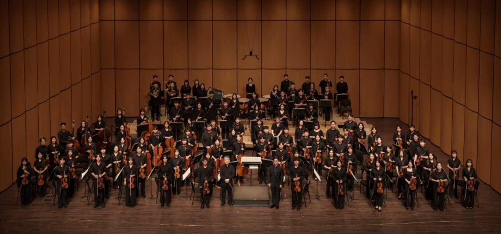

“하모니를 통해 깊은 감동을 선사하는 오케스트라 동아리"
성균관대학교 오케스트라(SKKUO)는 1987년에 창단된 교내 중앙 동아리로,
음악을 사랑하는 학생들이 모여 다양한 연주 활동을 펼치고 있습니다.
매년 정기 연주회를 비롯하여 다양한 공연을 통해 클래식 음악의 아름다움을 전하고 있으며,
단원들의 음악적 성장과 교류를 도모하며 음악을 매개로 한 소통의 장을 마련하고 있습니다.
SKKUO는 전공에 상관없이 음악에 대한 열정과 관심이 있는 모든 학생들에게 열려 있으며,
함께 연주하며 만들어가는 하모니를 통해 깊은 감동을 선사하고자 합니다.


“하모니를 통해 깊은 감동을 선사하는 오케스트라 동아리"
성균관대학교 오케스트라(SKKUO)는 1987년에 창단된 교내 중앙 동아리로,
음악을 사랑하는 학생들이 모여 다양한 연주 활동을 펼치고 있습니다.
매년 정기 연주회를 비롯하여 다양한 공연을 통해 클래식 음악의 아름다움을 전하고 있으며,
단원들의 음악적 성장과 교류를 도모하며 음악을 매개로 한 소통의 장을 마련하고 있습니다.
SKKUO는 전공에 상관없이 음악에 대한 열정과 관심이 있는 모든 학생들에게 열려 있으며,
함께 연주하며 만들어가는 하모니를 통해 깊은 감동을 선사하고자 합니다.
1987 성균관대학교 SKKUO 창단
2021 제 35회 가을연주회
2021.09.04 회장 | 조한서, 김재표 지휘 | 김휘정 악장 | 윤채원
2022 제 36회 봄 · 가을연주회
2022.02.27 회장 | 홍현준, 허유경 지휘 | 김휘정 협연 | 박상정, 박원준
2022.08.28 회장 | 홍현준, 허유경 지휘 | 김휘정
2023 제 37회 봄 · 가을연주회
2023.02.25 회장 | 김연우, 정재훈 지휘 | 김휘정 협연 | 박민우
2023.08.29 회장 | 김연우, 정재훈 지휘 | 김휘정
2024 제 38회 봄 · 가을연주회
2024.03.02 회장 | 박도연, 이지연 지휘 | 장예은
2023.08.29 회장 | 박도연, 이지연 지휘 | 김휘정 협연 | 조민규